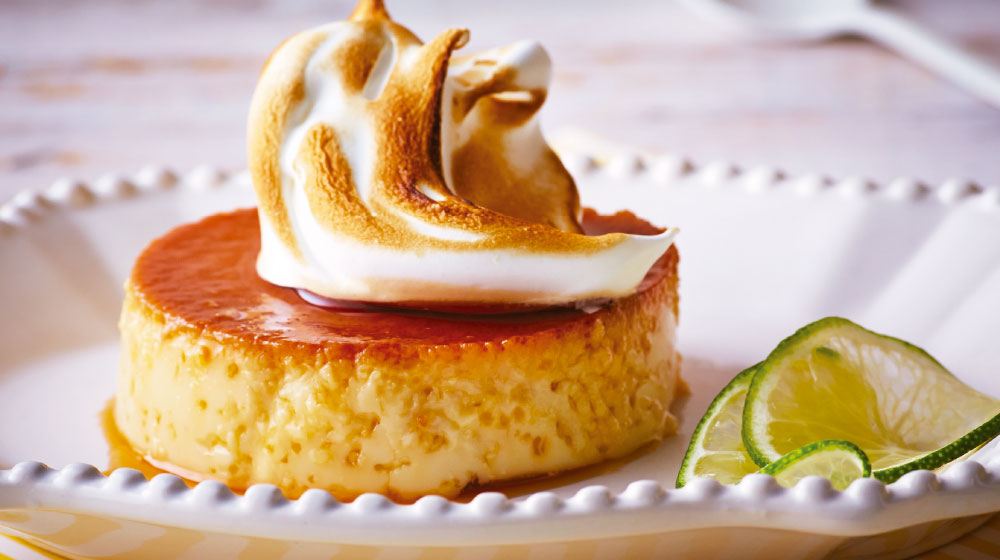
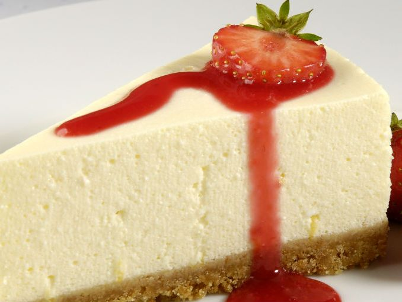

Ingredientes: 6 huevos
1 taza de leche evaporada
1 lata de leche condensada
1/4 de taza de jugo de limón
1 cucharadita de ralladura de limón
1 taza de azúcar
Preparación: Precalienta el horno a 175 oC. Mezcla los huevos con las leches, la ralladura y el jugo de limón en la licuadora.
Calienta el azúcar a fuego bajo hasta lograr un caramelo suave. Retira del fuego y colócalo en un molde mediano para hornear. Vierte sobre él la mezcla previa.
Cubre con papel aluminio. Coloca el molde en una bandeja a baño María y hornea por 40 minutos o hasta que al insertar un palillo, salga limpio.
Déjalo enfriar a temperatura ambiente y luego ponlo dentro del refrigerador hasta servir.
Puedes decorar con un poco de merengue y rebanadas de limón en cada plato.

Ingredientes: 1 1/2 paquete de galletas María molidas
1 barra de mantequilla
1 paquete de queso crema
5 huevos
1 lechera
1 cucharadita de esencia de vainilla
1/2 taza de crema espesa
Preparación: En un recipiente coloca las galletas Marías con la barra de mantequilla y mezcla hasta formar una pasta suave. Colócala en tu molde para pay y espárcela con tus dedos hasta que el fondo y bordes de este queden completamente cubiertos.
En el mismo recipiente donde creaste la base (puede ser otro si así lo prefieres), coloca el queso crema, los huevos, la lechera, la vainilla y la crema y con la batidora mezcla hasta que todo se integre.
Vacía sobre la base de galleta y coloca el recipiente en el horno a 180º por 45 minutos, aproximadamente. Una vez transcurrido el tiempo retira del horno, espera a que se enfríe un poco y sirve.
